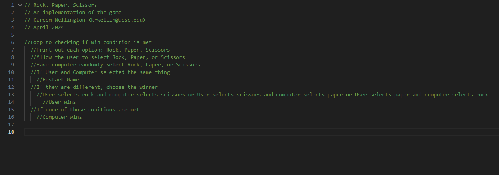

Lab 4 - Pseudocoding and Problem-solving
Subject
For this lab, we had to create Pseudocode for a simple computer game
Challenges
Results
Task 1: Pseudocode an everyday task
- Preheat the oven to 350 degrees
- Take out all the ingredients: butter, sugar, flour, salt, vanilla extract, and chocolate chips
- Take out a bowl, a whisk, a baking sheet, and a spoon
- Melt the butter
- Add sugar to the melted butter
- Mix in one egg and the vanilla extract
- Add flour, baking soda, and salt to the mixture
- Once smoothly mixed, add in chocolate chips
- After the chocolate chips have been evenly folded in, take a spoon scoop out balls of cookie dough, and place them on the baking sheet
- Bake the cookies for 7-10 minutes
Task 2: Pseudocode a simple computer game
- Print the images of rocks,paper, and scissors
- Accept user input
- Have the computer randomly pick between rock, paper, or scissors
- Compare user input and computer choice
- Choose winner
- If it is a tie, the game restarts
Task 3: Turn pseudocode into comments

//Loop to checking if win condition is met
//Print out each option: Rock, Paper, Scissors
//Allow the user to select Rock, Paper, or Scissors
//Have computer randomly select Rock, Paper, or Scissors
//If User and Computer selected the same thing
//Restart Game
//If they are different, choose the winner
//User selects rock and computer selects scissors or User selects scissors and computer selects paper or User selects paper and computer selects rock
//User wins
//If none of those conitions are met
//Computer wins